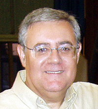

Au début des années 1960s, à 15 ans, il est attiré par les sciences naturelles, a des préoccupations d'exploration
(archéologie, botanique, volcanisme) et s'enthousiasme pour les informations spatiales (débuts de l'espace et l'astronomie). Son goût pour ces matières dérive de ses lectures des
bandes-dessinée Diego Valor de son enfance, de et . Quand il commence à
lire des livres sur l'astronomie au milieu des années 1960s, il tombe sur un
livre de Russie Firsoff VA mentionnant l'existence de soucoupes volantes, poursuivies par des avions de chasse aux
USA, qui achève de transformer ma passion pour le sujet.
En il obtient son baccalauréat au Collège San José (pères jésuites) de la ville.
CEONI
Ballester-Olmos, Guasp et Willy Smith chez ce dernier en 1993 Ballester-Olmos: "2006/10/27", FotoCat
En , il fonde le CEONI sur
le campus de l'Université de Valence, ainsi que l'équipe nationale d'enquêteurs (ENI) de à . En
, il obtient un diplôme de programmation en Fortran 4 au Département de Logique et Philosophie de
la Science de la Faculté de Philosophie et Lettres, et sort avec Miguel Guasp (physicien de l'Université) un 1er
livre Ballester-Olmos, V.-J. & Guasp, M.: Teoria de Procesos de los Ovnis, 1973.
Le CEONI s'arrête cette année-là et Ballester-Olmos devient cadre dans les assurances, puis à partir de
employé chez Ford.
En il devient coordinateur du conseil des constulants de la revue STENDEK, jusqu'en
où il part suivre une formation du FUFOR (Washington, D.C.)
pour l'étude de cas de rencontres rapprochées d'ovnis rapportés en Espagne et au Portugal. Entre-temps il a publié
un autre livre avec Guasp sur "les ovnis et la science" Ballester-Olmos, V.-J. & Guasp, M.: Los
OVNIs Y La Ciencia, Plaza y Janés, S. A. (Barcelone, Espagne), décembre 1981 (1ère edition). Préface de Richard F. Haines. Collection Varia. 2nde édition, avril 1989. Collection Otros Horizontes.
Il met aussi au point avec ce dernier une méthode d'évaluation des enquêtes Ballester-Olmos, V.-J. & Guasp, M.: "Standards en la evaluación de los informes OVNI", Stendek, 39, mars 1980, pp. 25-28 et 43. (RP) Et 43, mars 1981, p. 47 (L). traduit (augmenté): "Standards in the Evaluation of UFO Reports", The
Spectrum of UFO Research de Mimi Hynek (editeur), CUFOS (Chicago, Illinois), 1988, pp. 175-182. Et (revisé) "Ballester-Guasp Evaluation of Completed Reports" de Jerold Johnson, dans le Manuel de l'Enquêteur du MUFON, Walter H. Andrus, Jr. (editor), Mutual UFO Network, Inc. (Seguin, Texas), février 1995, pp. 214-221 (CB). Traduit "Evaluation
Ballester-Guasp", RR0. Voir aussi calculateur
Javascript en ligne (Evaluateur de Rapport) de Terry Groff basé sur le système d'évaluation Ballester-Guasp, ainsi que l'article d'introduction de Todd Lemire "Tools
for the Field Investigator".
En il reçoit avec John F. Schuessler le prix Alvin Lawson, pour
ses avancées dans la compréhension scientifique du phénomène ovni et devient rédacteur-en-chef du journal UPIAR
Research In Progress édité par EDITECTS à Bologne (Milan?, Italie) jusqu'en 1985.
CEI

Ballester-Olmos
A partir de il devient directeur des enquêtes du Centre des Etudes Interplanétaires (CEI) de Barcelone (Espagne),
jusqu'en .
Anomalia
Entre-temps il co-fonde le (approuvé par le Ministère de la Culture le
) la Fondation Anomalie (organisation à but non
lucratif) dont il devient Vice-president et directeur de Recherche. Cette année-là il reçoit le prix Anaparéstesis
de cette association.
En , il est nommé pour le prix à la mémoire de Isabel L. Davis du
MUFON Inc.
Ballester Olmos est membre/représentant/consultant pour l'Espagne du MUFON, du CUFOS, de la SSE, du NARCAP, RIAP, et du European Journal
of UFO and Abduction Studies.
Auteur de :
"Halos y parhelios", Algo, 27, 1965-02-01, p. 89. (S)
"Efectos de las radiaciones en los peces", Algo, 33, 1965-05-01, p. 299. (S)
"La rotación de Venus", Algo, 37, 1965-07-01, p. 466. (S)
"Campos magnéticos artificiales para proteger a los cosmonautas", Algo, 64, 1966-08-15, p. 569. (S)
"La ciencia en la antigüedad", Algo, 67, 1966-10-01, p. 673. (S)
"España lanzó su primer cohete espacial", Algo, 73, 1967-01-01, pp. 12-13. (S)
"Las células de energía en el Apolo", Algo, 77, 1967-03-01, p. 149. (S)
"Platillos volantes", Diez Minutos, 1967-08-05, p. 3. (L)
"Venus a la luz de las sondas Venusik y Mariner", Sabadell, 1967-11-21, p. 14. (S)
"Entidades OVNI-UFOS", Algo, 97, 1968-01-01, p. 33. (L)
"Extraordinaria localización de OVNIS por el Observatorio Adhara de Buenos Aires", Algo, 100, 1968-02-15,
p. 131. (A). et Algo, 102, 15 mars 1968, p. 212. (L)
"¿Es infructuosa la investigación sobre los OVNIS?", Algo, 102, 1968-03-15, p. 202. (A)
"Colegio Mayor A. Salazar. Círculo de estudios sobre objetos no identificados", Las Provincias,
1968-03-23. Levante, 1968-03-24. (L)
"Los soviéticos ya creen en los OVNIS", Algo, 104, 15 avril 1968, pp. 276-277. (A)
"Satélites sublunares", Astrum, avril-septembre 1968, pp. 90-91. (S)
"¿Por qué no pueden existir los OVNIS?", Algo, 105, 1er mai 1968, pp. 314-315. Papers d' Ovnis,
juillet-septembre 2002, pp. 23-25. (A)
"Carta desde Buenos Aires", Algo, 106, 15 mai 1968, p. 356. (L)
"Informe sobre dos observaciones de OVNI en España", Algo, 107, 1er juin 1968, pp. 386-387.
"Noticiario OVNI de Iberoamérica", Algo, 108, 15 juin 1968, p. 422. (A)
"Una sorprendente información procedente de Vietnam del Sur", Algo, 111, 1 août 1968, pp. 532-533. (A)
"El dossier fotográfico de los U.F.O.", Algo, 112, 15 août 1968, pp. 568-569. (A)
"Círculo de Estudios sobre Objetos No Identificados. Aviso", Levante et Las Provincias, 25
septembre 1968. (L)
"Respuesta del CEONI sobre una fotografía de OVNI publicada", Algo, 121, 1er janvier 1969, p. 25. (L)
"La Europa de los OVNI", Algo, 122, 15 janvier 1969, pp. 60-61. (A)
"Excepcionales medidas de los gobiernos USA y URSS con los OVNI", Algo, 125, 1er mars 1969, pp. 170-171.
(A)
"Los enigmáticos aterrizajes de objetos no identificados", época (Piura, Perú), mai 1969, pp. 14-15 et
17. (A)
"Un OVNI fotografiado en Valencia", Levante et Las Provincias, 31 mai 1969. (L)
"El inquietante problema de los ONI agresivos", Algo, 131, 1er juin 1969, pp. 386-387. (A)
"El aterrizaje de Villares del Saz", Cíclope Informa, 17, juin 1969, pp. 1-4. (RP)
"Consideraciones sobre varios detalles de dos aterrizajes OVNI", Cíclope Informa, 18, juin 1969, pp. 5-7.
(RP)
"Aterrizajes, teleportaciones, efectos E-M y otras cosas", Algo, 140, 15 octobre 1969, pp. 709-711. Boletín
Informativo DIOVI-CICA, 14, janvier-juin 1970, pp. 7, 9 et 10. (A)
"Entre Villar del Campo y Calamocha", Cíclope Infoma, 24/25, 1969, pp. 29-30. (RP)
"España y el fenómeno de los OVNIS", Cíclope Informa, 24/25, 1969, pp. 30-32. (RP)
"Equipo nacional de investigadores de OVNI", Levante, 13 novembre 1969. (L)
"Círculo de Estudios sobre Objetos No Identificados (CEONI)", Levante et Jornada, 2 décembre
1969. (L)
"Comunicado oficial del E.N.I.", Algo, 144, 15 décembre 1969, p. 865. (L)
"¿OVNIS sobre la Luna? No. Reflejos: si.", Cíclope Informa, 55, 1969, pp. 137-139. (RP)
"Un insólito acompañante...en el camino a Toulouse", Cíclope Informa, 55, 1969, pp. 139-140.
Traduction : "Un compagnon insolite...sur le chemin de Toulouse", Phénomènes Spatiaux, 22, décembre 1969,
pp. 31-33. (RP)
"Los OVNIS sí merecen crédito científico", Levante, 20 décembre 1969. (L)
"Tall Green Alien Near Zafra (Spain)", Spaceview, 60, 1970, pp. 12-13. (A)
"Comunicado del Equipo Nacional de Investigadores", Algo, 145, 1er janvier 1970, p. 20. (L)
Algo, 148, 15 févier 1970. (L)
"Investigación sobre aterrizajes de OVNIS en la Península Ibérica", Stendek, 1, juin 1970, pp. 6-9. et
Algo, 160, 15 août 1970, pp. 554-557. (RP)
"Investigación de aterrizajes en la península", Algo, 157, 1er juillet 1970, p. 460. (L)
"Si y no a Antonio Ribera. Si", Algo, 162, 15 septembre 1970, p. 624 (L).
"Fin de una controversia: la mixtificación de Serra da Gardunha", Stendek, 3, décembre 1970, pp. 4-5
(RP).
"Notas sobre la Operación Antiquités", Algo, 170, 15 janvier 1971 (L).
"Círculo de estudios sobre objetos no identificados", Levante, 10 mars 1971. et Las Provincias
et Jornada, 11 mars 1971 (L).
"CEONI", Algo, 177, 1er mai 1971 (L).
"Deux cas anciens d'aterrissage en Espagne", Phénomènes Spatiaux, 28, juin 1971, pp. 17-20. (A)
"Un misterioso objeto submarino",
Stendek, 5, juin 1971, pp. 22-24. et Contactos Extraterrestres (Mexique), 26 avril 1978, pp.
22-25. Traduction : "Unusual Underwater Object", Flying Saucer Review Case Histories, 6, août 1971, pp.
5-7. (RP)
Ballester-Olmos, V.-J. & Vallée, Jacques: "Type-1 Phenomena in Spain and Portugal. A
Study of 100 Iberian Landings" (avec Jacques Vallée), in UFOs in Two Worlds, Charles Bowen
(editor), FSR, n° spécial 4, août 1971, pp. 40-64. Et
DATA-NET Special Report, mars à mai 1971. Traduit "Estudio de 100 aterrizajes de OVNIS en la Península Ibérica",
Stendek, numéro spécial, juillet 1971, pp. 2-36. Traduit "Etude de cent atterrissages ibériques", LDLN, 111 (avril 1971) à 115bis, janvier 1972. Traduit "Ufoer over
Spanien og Portugal", Dansk UFO Center (Thisted, Denmark), 1974 (RP). Traduit "Los fenómenos del Tipo I en
España y Portugal (Un estudio de 100 aterrizajes ibéricos)", in Pasaporte a Magonia (édition espagnole de
Passport to Magonia), Jacques Vallée, Plaza y Janés, S.A. (Barcelona, Spain), mai 1972, pp. 419-449.
Paperback édition, Plaza y Janés, S.A., novembre 1976, pp. 509-536. (CB)
Ballester-Olmos, V.-J. & Vallée, J.: "Sociology of the Iberian Landings", DATA-NET, novembre 1971, pp.
2-5. Réédité FSR, vol. 18:4, juillet-août 1972, pp. 10-12. Traduit "Sociología de los
aterrizajes ibéricos", Stendek, 7, décembre 1971, pp. 27-30. (RP) et dans Pasaporte a Magonia
(édition espagnole de Passport to Magonia), Jacques Vallée, Plaza y Janés, S.A. (Barcelone), mai 1972, pp.
451-459. Paperback edition, Plaza y Janés, S.A., novembre 1976, pp. 537-543. (CB)
"Landings in Spain in 1958", FSR, Vol. 17:4, juillet-août 1971, pp. 10-12. (A)
"A Request to Investigators in Peru", FSR, Vol. 17:5, septembre-octobre 1971, p. 32. (L)
"Precisiones en torno al caso de Almaceda" (with Julio Massé), Stendek, 6, septembre 1971, pp. 13-14. (RP)
Ballester-Olmos, V.-J.: "Landing Research in Spain: A Report", DATA-NET, octobre 1971, pp. 3-4. And novembre 1971,
p. 6. (A)
Ballester-Olmos, V.-J.: "Record and Analysis of the Spanish Negative Landings", DATA-NET, décembre 1971, pp. 5-13.
et FSR, vol. 18:4, juillet-août 1972, pp. 31-32. et Vol.
20:2, 1974, p. iii. Traduit "Registro de los aterrizajes negativos españoles", Stendek, 13, juin 1973, pp.
28-34.
Ballester-Olmos, V.-J. & Orlando, Carlos: "Notas estadísticas sobre la oleada de 1950 en España y Portugal", Stendek,
8, mars 1972, pp. 23-33. Traduit "Statistical Notes on the 1950 Iberian UFO Flap", DATA-NET, avril 1972, pp. 4-14.
(RP)
Ballester-Olmos, V.-J. & Orlando, Carlos: "Follow-Up to the 1950 Survey", DATA-NET, mai 1972, pp. 2-7.
Traduit "Ampliación al ensayo sobre 1950", Stendek, 9, août 1972, pp. 26-29. (RP)
Ballester-Olmos, V.-J. & Guasp, M.: "Quantification of the Law of the Times", DATA-NET, juin 1972, pp.
2-8. And The UFO Register, 4, Part II, décembre 1973, pp. 7-15. traduit "Cuantización de la Ley Horaria", Stendek,
14, septembre 1973, pp. 7-11. et 15, décembre 1973/mars 1974, p. 38. (RP)
"Los extraños seres de L'Escala (Gerona)", Stendek, 9, août 1972, pp. 30-32. And 11, décembre 1972, p.
29. (A)
"Las fotos de Lérida o un OVNI explicado", Stendek, 10, septembre 1972, pp. 24-25. (RP)
Ballester-Olmos, V.-J.: "Constantes en los informes de huellas de aterrizaje", Stendek, 10, septembre
1972, pp. 14-17. Traduit "Some Patterns in UFO Landing Traces Reports", DATA-NET, novembre 1972, pp. 2-6. (RP)
Ballester-Olmos, V.-J. & Bonabot, Jacques: "The World-Wide Wave of 1950": Further
Enquiries", DATA-NET, octobre 1972, pp. 2-9. Traduit Visiteurs Spatiaux, 30, décembre 1972. (RP)
Ballester-Olmos, V.-J.: "Biometric Data in 19 UFO Occupant Cases", DATA-NET, décembre 1972, pp. 2-9. And
FSR, Vol. 19:3, mai-juin 1973, pp. 19-23. Traduit "Données
biométriques dans 19 cas d'occupants d'UFOs", Phénomènes Spatiaux, 35, mars 1973, pp. 3-10. Et LDLN, 127, août-septembre 1973, pp. 4-9. Traduit "Datos biométricos en 19 casos
de ocupantes", OVNIS: Un desafío a la ciencia, 3, septembre-octobre 1974, pp. 13-19 (RP). Traduit "Données
biométriques extraites de 19 cas de passagers d'OVNIS", in Premières enquêtes sur les humanoïdes
extraterrestres, Henry Durrant, Robert Laffont (Paris), 1977, pp. 173-183.
Traduit "Datos biométricos extraídos de diecinueve casos de pasajeros de OVNIS", in Humanoides extraterrestres,
Henry Durrant, Javier Vergara Editor (Buenos Aires), 1978, pp. 175-185. (CB)
"Carta de Ballester Olmos sobre el caso de L´Escala", Stendek, 11, décembre 1972, p. 29. (L)
Ballester-Olmos, V.-J.: "Aterrizaje en la noche de Reyes de 1961", Stendek, 11, décembre 1972, pp. 32-33.
Traduit "Twelfth Night...And a UFO", FSR Case Histories, 18,
février 1974, pp. 10-12. (A)
"Prólogo", in Teoría de procesos de los OVNI, Miguel Guasp, the author (Valencia), 1973. (F)
"Disc and Beam Observed", FSR, Vol. 19:1, janvier-février
1973, p. 30. (L)
"Ballester Olmos habla sobre la situación del C.E.O.N.I.", Stendek, 12, mars 1973, p. 33. (L)
Ballester-Olmos, V.-J.: "Evoluciones de un OVNI cerca de Muñotello (ávila)", Stendek, 14, septembre 1973,
pp. 25-28. et Contactos Extraterrestres (Mexique), 30 août 1978, pp. 36-39. Traduit "Evoluzioni di un UFO
intorno a Muñotello (Spagna)", Il Giornale dei Misteri, avril 1975, pp. 7-9. (RP)
"El affaire del Concorde 001", Stendek, 15, décembre 1973/mars 1974, p. 31. (L)
"Introducción" , in "Test de extrañeza-credibilidad", Alberto Adell, Stendek, 16, juin 1974, p. 29. (F)
"A modo de presentación del autor", in "Análisis procesal de las direcciones de vuelo de los OVNIS", Miguel Guasp,
Stendek, 17, septembre 1974, p. 11. (F)
"Aterrizaje en San Clemente (Nuevos datos)" (with Vicente Manglano), Stendek, 18, décembre 6 1974, pp.
3-8. (RP)
"El Dr. Jacques Vallée en nuestro país", Stendek, 22, décembre 1975, p. 37. (L)
Ballester Olmos, V.-J.: A Catalogue of 200 Type-I UFO Events In Spain And Portugal, CUFOS (Evanston, Illinois), avril 1976. Préface de Jacques Vallée.
Ballester-Olmos, V.-J.: "Are UFO Sightings related to Population?", in Proceedings of the 1976 CUFOS
Conference, Nancy Dornbos (editor), Center for UFO Studies (Evanston, Illinois), mai 1976, pp. 15-24. (CB).
Traduit "¿Tienen relación los avistamientos OVNI con la población?", Stendek, 27, mars 1977, pp. 31-39
(RP).
"U.S.A.: Rastreo de OVNIS", Mundo Desconocido, juillet 1976, pp. 83-89. (A)
"Acechando a los OVNIS", Mundo Desconocido, août 1976, pp. 66-77. (A)
"Los OVNIS, a debate", Mundo Desconocido, août 1976, pp. 79-83. (A)
"Los OVNI y la Ciencia" (with Guillermo Mondaza), Stendek, 25, septembre 1976, pp. 21-27. (A)
A catalogue of 200 type-1 ufo events in Spain and Portugal (préface de Jacques Vallée. - Evanston,
IL : CUFOS, 1976. - xiii, 77 s. : ill. - (Technical report ; no. 2))
Enciclopedia de los encouentros cercanos con OVNIs avec Juan A. Fernandez Peris (Espluegas de
Llobregat, Barcelone : Plaza y Janés, 1987. - 383 s. : ill. - (Otros horizontes))
Ballester Olmos, V.-J.: Estudio de 100 aterrizajes de ovnis en la peninsula Ibérica avec
Jacques Vallée (Barcelone : CEI-Barcelona, 1971. - 58 s. : ill. - (Stendek extra, julio 1971)
Expedientes insólitos : el fenómeno ovni y los archivos de Defensa (préface de Javier Sierra ; postface de Jacques Vallée - Madrid : Ediciones Temas de Hoy,
1995. - 286 s. - (Colección España hoy ; 38)
Investigación ovni (préface de J. Allen Hynek. - Espluegas
de Llobregat, Barcelone : Plaza y Janés, 1984. - 297 s., 8 tav. : ill. - (Otras horizontes)
Ballester Olmos, V.-J.: Ovnis - El fenómeno aterrizaje, 2ème edition, Barcelone : Plaza
y Janés, 1984. - 346 s. - (Realismo fantástico ; 115) - préface de Jacques Vallée
"On UFO and the Poisson Distribution", UFO Phenomena International Annual Review, Vol. 2: 1, 1977, pp. 201-202.
(L)
"Desinformación", Stendek, 28, juin 1977, p. 1. (E)
"Bibliografía sobre propulsión de los OVNIS", Stendek, 28, juin 1977, pp. 14-16. (Bi)
"Cartas al Director", Stendek, 28, juin 1977, pp. 39-40. (L)
"Libros y crítica", Stendek, 29, septembre 1977, pp. 40-41. (BR)
"Nuevas publicaciones", Stendek, 30, décembre 1977, p. 49. (BR)
"La ufología en la década de los setenta", in Actas del primer congreso nacional de Ufología: Ponencias técnicas,
Pedro Redón (editor), Centro de Estudios Interplanetarios (Barcelona), février 1978, pp. 3-18. (CB)
"Los casos de aterrizaje. Dimensiones de los vehículos espaciales", Contactos Extraterrestres (Mexique),
8 février 1978, pp. 20-23. (A)
"Editorial" (with Adell, Ares, Guasp, López, Ramírez, Redón, Salaverría and Tamayo), Stendek, 31, mars 1978, p. 1.
(E).
"Nuevas publicaciones", Stendek, 31, mars 1978, p. 49. (BR)
"OVNIS. Realidad de un fenómeno", Mundo Ford, 15, 21 avril 1978, p. 2; 16, 26 mai 1978, p, 2; 17, 23 juin 1978 ,
p. 2; 18, 7 juillet 1978, pp. 2-3; and 19, 21 juillet 1978, p. 2. (A)
"Encuentro con un OVNI submarino", Contactos Extraterrestres (Mexique), 26 avril 1978, pp. 22-25. (A)
"Un OVNI sobre la carretera", Contactos Extraterrestres (Mexique), 21 juin 1978, pp. 14-17 and 46. (A)
"Encuentros en la tercera fase: discusión de los posibles efectos sociológicos del film", Stendek, 32, juin 1978,
pp. 1 and 17. (E)
Ballester-Olmos, V.-J., Smith, W. & Guasp, M.: "Automóvil perseguido entre Villamarsante y Chiva (Valencia)", Stendek,
32, juin 1978, pp. 18-22 and 26. And Contactos Extraterrestres (Mexique), 15 mars 1978, pp. 20-23 & 48. Traduit
"Dramatic Chase in Spain", UFO Phenomena International Annual Review, vol. 3:1, 1978/1979, pp. 71-86. (RP).
et "Serena Encounter" (avec Willy Smith et Miguel Guasp), in The Encyclopedia
of UFOs, Ronald Story, Doubleday (Garden City, New York),1980, pp. 327-330. (CB)
"Nuevas publicaciones", Stendek, 32, juin 1978, pp. 46-47. (BR)
Ballester-Olmos, V.-J.: OVNIs : El Fenómeno Aterrizaje, Plaza y Janés, S.A. (Barcelona), juillet 1978.
Préface de Jacques Vallée. Collection Otros Mundos. 2nde édition octobre 1978, Collection Varia.
paperback edition, mars 1979, Collection Realismo Fantástico.
"Creación del Consejo de Consultores de Stendek", Stendek, 33, septembre 1978, p. 1. (E)
"Nuevas publicaciones", Stendek, 33, septembre 1978, pp. 46-47. (BR)
"Un insólito compañero de viaje", Contactos Extraterrestres (Mexique), 13 septembre 1978, pp. 18-22. (A)
"Un aterrizaje espectacular en Portugal (1957)", Contactos Extraterrestres (Mexique), 2 octobre 1978, pp.
26-30. (A)
"Los sucesos del Pantano del Generalísimo", Contactos Extraterrestres (Mexique), 1 novembre 1978, pp.
34-38 and 49-50. And Contactos Extraterrestres (España), 5, 1980, pp. 194-199. (A)
"La aparición de Porcieda", Contactos Extraterrestres (Mexique), 13 décembre 1978, pp. 18-21 and 48-49.
(A)
"Nuevas publicaciones", Stendek, 34, décembre 1978, pp. 48-49. (BR)
"Recent Developments in Spanish Ufology", UFO Phenomena International Annual Review, Vol. 3:1, 1978/1979, pp.
328-331. (L)
"Clases de fenómenos OVNI", Contactos Extraterrestres (Mexique), 7 mars 1979, pp. 38-41. (A)
"Testigos y huellas del fenómeno OVNI", Contactos Extraterrestres (Mexique), 21 mars 1979, pp. 40-43 and
45-47. (A)
"Aproximación a la casuística OVNI de Canarias" (with José Vicente Alós y Julio Massé), Stendek, 36, juin 1979,
extra p. 25. And Vimana, 4, 1979, p. 14. (RP)
"Correlaciones astronómicas", Stendek, 36, juin 1979, pp. 39-41. et Ufología, 1, 1980, pp.
21-23. et Boletín EIFO, 7, avril 1983, pp. 8-9 an 18. (RP)
"Desembarco en Aldaya", Contactos Extraterrestres (Mexique), 13 juin 1979, pp. 30-34 and 48-49. (A)
"El caso del inaudito "meteorito" ascendente", Contactos Extraterrestres (Mexique), 19 septembre 1979,
pp. 34-37 and 48. And Stendek, 38, décembre 1979, pp. 17-19. (A)
"Sobre presuntas observaciones de OVNIS", Las Provincias, 29 novembre 1979. (L)
"Nuevas publicaciones", Stendek, 37, septembre 1979, pp. 48-49. (BR)
"Encuentro ufológico internacional en Londres", Contactos Extraterrestres (Mexique), 17 octobre 1979, pp.
22-25, 46 and 48. And Stendek, 38, décembre 1979, extra pp. 24-25. (A)
"Nuevas publicaciones", Stendek n° 39, mars 1980, pp. 48-49. (BR)
"Progreso en el estudio de los encuentros cercanos", Contactos Extraterrestres (Espagne) n° 6, 1980, pp.
215-217 et 239-240. (A)
"El consejo de consultores de Stendek", Contactos Extraterrestres (Mexique), avril 1980, pp. 36-39. (A)
"OVNIS: el fenómeno aterrizaje", Contactos Extraterrestres (Mexique), 16 avril 1980, pp. 34-38. (A)
"Nuevas publicaciones", Stendek n° 40, juin 1980, pp. 44-45. (BR)
"Cartas al Director", Stendek n° 40, juin 1980, p. 47. (L)
"Deficiencies of the Hypnopompic-Hypnagogic Model to Explain UFO Experiences at Close Range", The Journal of
the Australian Center for UFO Studies, août 1980, pp. 12-13. (A)
"Aids to the UFO Investigator: A Bibliography", MUFON UFO Journal, octobre 1980, pp. 12-14. (Bi)
Mundo Desconocido, novembre 1980, pp. 81-82. (L)
"Censo actualizado de los aterrizajes ibéricos", Stendek n° 42, décembre 1980, p. 47. And Vimana, 8,
1980, p. 38. And Contactos Extraterrestres (España), 12, 1981, p. 487. (A)
"Nuevas publicaciones", Stendek, 42, décembre 1980, pp. 43-45. (BR)
"Las falsas fotos de El Saler", Mundo Desconocido, mars 1981, pp. 64-72. (RP)
Stendek, 43, mars 1981, p. 47. (L)
"Del éxito de las contraencuestas de casos antiguos", Stendek, 43, mars 1981, pp. 22-24. (A)
"Balance del último congreso OVNI", Stendek, 44, juin 1981, pp. 3-4. And 46, décembre 1981, p. 40. (E)
"Sorprendido mientras pescaba" (with J.A. Fernández, R. de Jorge and L. M. Garijo), Mundo Desconocido, septembre
1981, pp. 54-62. (RP)
"La Luna y los OVNIS invisibles", Stendek, 46, décembre 1981, pp. 25-27. (A)
Stendek, 46, décembre 1981, p. 40. (L)
"Catalogue of 'Negative' Landing Reports in the Iberian Peninsula", GTE/EWT Notice, 2, décembre 1981, pp. 4-6.
(RP)
"Times are Changing", UPIAR Research in Progress, Vol. 1:1, 1982, pp. 1-2. (E)
"UFO Research Bibliography", UPIAR Research in Progress, Vol. 1:1, 1982, pp. 48-54; and Vol. 1:2, 1982, pp. 65-71;
and Vol. 2:1, 1983, pp. 61-70. (Bi)
Ballester-Olmos, V.-J. & Guasp, Miguel: "UFOs, Sociability and ETI", UPIAR Research in Progress, Vol. 1:2, 1982,
pp. 35-40. Traduit "UFO, Sociabilitá ed ET", Nova Astronautica, vol.4, n° 19, janvier-mars 1989, pp. 23-26.
(RP)
"New Catalogue of UFO Landing Reports in the Iberian Peninsula (Spain and Portugal)", UPIAR 10 Research in
Progress, Vol. 1:2, 1982, pp. 75-77. (RP)
"New Spanish Book" (with Miguel Guasp), FSR, vol. 28:1,
1982, pp. 25-26. (L)
"¿OVNI o misil?", Mundo Desconocido, septembre-octobre 1982, pp. 35-41. (A)
"De los testigos de los aterrizajes de OVNIS", Cuadernos de Ufología (I), 1, 1983. (A)
"Against Winds and Tides", UPIAR Research in Progress, Vol. 2:1, 1983, pp. 1-4. (E)
"Reply from co-author of commented paper", UPIAR Research in Progress, Vol. 2:1, 1983, p. 74. (L)
"On Spiked Ball Lightning", UPIAR Research in Progress, Vol. 2:1, 1983, p. 75-76. (L)
"Una investigación OVNI metódica: objetivo para el ufólogo actual", Cuadernos de Ufología (I), 2, 1983. Karma-7,
avril 1983, pp. 10-13. (A)
"El enigma del rayo globular", Cuadernos de Ufología (I), 4, 1983, pp. 15-22. (A)
"Investigación de los encuentros cercanos", Karma-7, juin 1983, pp. 9-12. (A)
"El falso avistamiento OVNI de Sanlúcar la Mayor" (with José Ruesga), Karma-7, juillet 1983, pp. 5-9. (RP)
"El aterrizaje OVNI que nunca ocurrió" (with Juan A. Fernández and Juan M. Gascón), Karma-7, octobre 1983, pp.
5-8. (RP)
"Medida de la subjetividad de un testimonio" (with Miguel Guasp), UFO Press, 18, octobre 1983, pp. 17-23. (RP)
"URIP and the Panorama of Ufology" (with Roberto Farabone), UPIAR Research in Progress, Vol. 2:3/4, 1984, pp. 3-4.
(E)
Investigación OVNI, Plaza y Janés, S.A. (Barcelona), avril 1984. Préface de J. Allen Hynek. Collection: Horizonte.
"Sobre la validez del análisis de gabinete", Cuadernos de Ufología (I), 6, juin 1984, pp. 1-2. (A)
"Hacia una nueva forma de ufología", Cuadernos de Ufología (I), 6, juin 1984. And UFO Press, 20, avril-juin 1984,
pp. 22-26. And Karma-7, mai 1985, pp. 19-22. (A)
"Bases científicas de la ufología (No es OVNI todo lo que reluce)", Muy interesante, août 1984, pp. 40-45. (A)
"The Extraterrestrial Hypothesis" (avec Miguel Guasp), Bulletin de l'APRO, vol.
32:5, août 11 1984, pp. 6-8; Vol. 32:7, septembre 1984, pp. 7-8; and Vol. 32:8, décembre 1984, pp. 3-4. (A)
"Análisis computarizados de fotografías OVNI por GSW, Inc.", Cuadernos de Ufología (I), 7, septembre 1984, p. 20.
(L)
"Primera inspección estadística de la casuística andaluza (1908-1967)" (with José Ruesga), Cuadernos de
Ufología (I), 7, septembre 1984, pp. 23-26. (RP)
"La positiva crisis de la ufología española", Cuadernos de Ufología (I), 7, septembre 1984, pp. 1-2. (E)
"La influencia de los mass media en el avistamiento OVNI", Karma-7, mai 1985, p. 23. (L)
"Estudio científico del fenómeno OVNI", Nuestra opinión, juin 1985, pp. 5-8. And Nueva Dimensión, septembre 1986.
(A)
"Algunas reflexiones personales", Cuadernos de Ufología (I), 13-14, décembre 1985. (L)
"Introducción al análisis del caso de Mañeru", Cuadernos de Ufología (I), 13-14, décembre 1985. MIZAR, été 2000,
pp. 14-15. (RP)
"Análisis computarizado del OVNI de San Carlos de Málaga", Karma-7, décembre 1985, pp. 15-19. (RP)
"Modulación social de las oleadas", Cuadernos de Ufología (I), 15, mars 1986, pp. 18-20. (RP)
Ballester Olmos, V.-J. & Fernández, Juan A. & Plana, Joan: "Actitud de las autoridades españolas sobre
los OVNIS", Cuadernos de Ufología (I), 15, mars 1986. And Karma-7, juillet 1986, pp. 21-24; et août 1986,
pp. 17-20. Traduit "Comportemént des autorités espagnoles à propos des OVNI", LDLN,
265-266, juillet-août 1986, pp. 22-27. Traduit "The Attitude of the Spanish Authorities Towards the UFOs", FSR, Vol. 32:3, 1987, pp. 3-7 (RP).
"Un caso ambiguo: ¿OVNI o helicóptero?" (avec Juan A. Fernández, Antonio Bueno and Jaime Servera), Karma-7,
décembre 1986, pp. 12-19. (RP)
"La realidad transformada. (No es OVNI todo lo que reluce)", Karma-7, janvier 1987, pp. 7-8. (A)
"Carta abierta a los medios de comunicación", Karma-7, février 1987, p. 8. (L)
Enciclopedia de los Encuentros cercanos con OVNIs (avec Juan A. Fernández), Plaza y Janés, S.A.
(Barcelona), mars 1987.Collection : Otros Horizontes.
"Investigating the UFO", in UFOs 1947-1987. The 40-Year Search for an Explanation, Hilary Evans and John Spencer
(editors), Fortean Tomes (London), 1987, pp. 175-181. (CB)
"Banco de datos sobre aterrizajes OVNI" (avec Juan A. Fernández), Karma-7, mai 1987, p. 57. And Al encuentro
de..., février-mars 1988, pp. 3-7. (A)
Ballester Olmos, V.-J.: Characteristics of Close Encounters in Spain (avec Juan A. Fernández), FUFOR (Washington, D.C.), juin 1987. Traduit "Características de los encuentros
cercanos en España", Cuadernos de Ufología (II), 2, novembre 1987-mars 1988, pp. 32-45. (RP) (Mt. Rainier,
MD : Fund for UFO Research , 199-? – 25 s) - ...et au Portugal dans les 40 dernières années.
"OVNIS que dejan huella", MUY interesante, août 1987, pp. 44-48. (A)
"La figura del ocupante es de tipo humanoide" (with Juan A. Fernández), Karma-7, août 1987, pp. 11-13. Al
encuentro de..., 13, août-septembre 1989. (A)
Ballester Olmos, V.-J. & Fernández, Juan A.: "Facheuses escortes: Les cas de poursuite", LDLN, pp. 279-280, septembre-octobre 1987, pp. 23-26. Traduit "Incómodas
escoltas: los casos de persecución", Al encuentro de..., 17, avril-mai 1990, pp. 3-11 (A).
"Gli atterragi iberici", UFO, décembre 1987, pp. 11-15 (A).
"Efectos electromagnéticos en los encuentros cercanos con OVNIS" (with Juan A. Fernández), Al encuentro de ...,9,
décembre 1987-janvier 1988, pp. 3-10. (A)
"Impresiones personales sobre el simposio del MUFON", Cuadernos de Ufología (II), 2, novembre 1987-mars 1988, pp.
6-14. (A)
"Los OVNI-misiles de Canarias" (avec Joan Plana), Karma-7, mars 1988, pp. 17-19. (RP)
"El mayor congreso OVNI de la historia", Karma-7, avril 1988, pp. 12-15. (A)
"Fundación Anomalía", Magonia ETH Bulletin, 2, avril 1988, pp. 3-4. (L)
"El bólido del 2 de febrero de 1988" (with Juan A. Fernández and Jaime Servera), Universo secreto, avril 1988, p.
15. Cuadernos de Ufología (II), 3, septembre 1988, pp. 4-8. (RP)
"Investigación de campo y análisis de casuística OVNI", en I Simposio Nacional de Ufología, Special dossier
Karma-7 No. 1 (Barcelona), juin 1988, pp. 3-13. (CB)
"Testigos y testimonios: ¿objetivos o subjetivos?, in I Simposio Nacional de Ufología, Special dossier Karma-7 No.
1 (Barcelona), juin 1988, pp. 15-25. (CB)
Ballester Olmos, V.-J.: "Falsos OVNIS sobre Madrid", Universo secreto, juillet 1988, p. 13. And Karma-7,
août 1988, p. 8. And Cuadernos de Ufología (II), 3, septembre 1989, pp. 30-31. Traduit "Faux ovnis sur Madrid", Ovni-Présence,
41, mars 1989, p. 24. (A)
"OVNIS: la respuesta biológica" (with Juan A. Fernández), Universo secreto, juillet 1988, pp. 12-13. And
Siddharta, 4, mai-juin 1989, pp. 21-24. (A)
"UFO-Abductions. A Dangerous Game (Philip Klass)", Cuadernos de Ufología (II), 3, septembre 1988, pp. 82-87. (BR)
"Los informes de abducción. Análisis de las presuntas experiencias en el interior de los OVNIS" (with Juan A.
Fernádez), Cuadernos de Ufología (II), 4, décembre 1988, pp. 66-73. et 5, avril, 1989, p.84. (RP).
Ballester Olmos, V.-J. & Fernández, Juan A.: "The UFOs as a Material Phenomenon", FSR, vol. 33, n° 4, décembre 1988, pp. 17-18 & 24. Traduit
"Los OVNIS como fenómeno material", Al encuentro de..., 20, octobre-novembre 1990, pp. 3-11 (A).
"The Luminous Properties of UFOs" (with Juan A. Fernández), Flying Saucer Review, Vol. 33, No. 4, décembre 1988,
pp. 19-20. (A)
"El legado ufológico", Cuadernos de Ufología (II), 5, avril 1989, p. 3. (E)
"El mito de UMMO y las sectas, hoy", Cuadernos de Ufología (II), 5, avril 1989, pp. 41-45. (RP)
"OVNIS versus fenómenos naturales", Cuadernos de Ufología (II), 5, avril 1989, p. 51. (A)
"¿Son los OVNIS fenómenos naturales", Cuadernos de Ufología (II), 5, avril 1989, pp. 73-75. Estigia, 75,
mai-juin 1989, pp. 14-20. (A)
(avec Miguel Guasp), Cuadernos de Ufología (II), 5, avril 1989, p. 105. (L)
"Un enfoque escéptico de la ufología: El síndrome de transgresión de la realidad" (with Juan A. Fernández),
Siddharta, 4, mai-juin 1989, pp. 53-55. (A)
"Información complementaria", Karma-7, août 1989, p. 72. (L)
"Investigación retrospectiva o el pseudoaterrizaje de El Plantío de 1968", Cuadernos de Ufología (II), 6,
septembre 1989, p. 37. (RP)
El OVNI era un misil", MUY interesante, novembre 1989, p. 31. (A)
230 aterrizajes ibéricos: resultados estadísticos básicos" (avec Juan A. Fernández), Al encuentro de..., 15,
décembre 1989-janvier 1990, pp. 3-11. (RP)
"Voronezh (CCCP)", Cuadernos de Ufología (II), 7, janvier 1990, pp. 19-25. (A)
"Journal of UFO Studies", Cuadernos de Ufología (II), 7, janvier 1990, pp. 96-97. (BR)
Contribution of Spanish terms for the UFO Lexicon, Hilary Evans et John Spencer (editors), BUFORA (Burguess Hill, Sussex), avril 1990. (CB)
"NORAD y OVNIS", Cuadernos de Ufología (II), 8, mai 1990, p. 28. (A)
"Ecología de los aterrizajes OVNI", Cuadernos de Ufología (II), 8, mai 1990, pp. 44-87. And 9-10,
septembre-décembre 1990, p. 158. (RP)
Ballester-Olmos, V. J. & Borraz, Manuel: "Rastros luminosos en el cielo: Operación
Naja", Cuadernos de Ufología 14 (II), 8, 1990-05, pp. 95-98. (RP)
"La NASA se prepara para el contacto extraterrestre", Año Cero, septembre 1990, pp. 34-37. (S)
"Fiasco ufológico: El caso del Polvorín de Talavera (1976)", Cuadernos de Ufología (II), 9-10,
septembre-décembre 1990, pp. 117-121. And, 11, 1991, p. 102. (RP)
"Hungarian Ball Lightning Observations", Cuadernos de Ufología (II), 9-10, septembre-décembre 1990, p.
151. (BR)
"¿Qué era el OVNI estrellado en Roswell?", Año Cero, octobre 1991, pp. 46-49. (A)
"UFO Lexicon", Cuadernos de Ufología (II), 11, 1991, p. 99. (BR)
"Advanced Aerial Devices Reported During the Korean War", Cuadernos de Ufología (II), 12, 1992, pp.
99-100. (BR)
"Journal of UFO Studies", Cuadernos de Ufología (II), 12, 1992, p. 100. (BR)
"Informes OVNI y Defensa" (with Joan Plana), Cuadernos de Ufología (II), 13, 1992, pp. 3-4. (E)
"OVNIS: materia reservada" (with Joan Plana), Cuadernos de Ufología (II), 13, 1992, pp. 37-52. (RP)
"A los pilotos testigos de fenómenos OVNI" (with Joan Plana), Cuadernos de Ufología (II), 13, 1992, p.
13. And Karma-7, septembre 1992, p. 74. And Revista Aérea, décembre 1992-janvier 1993, p. 70. (L)
"El meteorito del 25 de noviembre de 1991", Gaceta de Ayamonte, juin 1992, p. 18. (L)
"Gorizont 21 : el ovni de chatarra", Karma-7, juillet 1992, pp. 48-53. (A)
"El Ejército Español desclasifica su información sobre OVNIS" (avec Joan Plana), Más Allá, juillet 1992, pp.60-67.
(A)
"Reentradas. El peligro que viene del cielo", Karma-7, novembre 1992, pp. 16-20. (A)
"El Ejército del Aire busca los casos perdidos", Más Allá, décembre 1992, pp. 28-31. (A)
"Mon ami Aimé Michel", Cuadernos de Ufología (II), 14, 1993, pp. 78-80. (A)
"Ciencia soviética e investigación OVNI", Cuadernos de Ufología (II), 14, 1993, pp. 98-99. (BR)
Ballester Olmos, V.-J.: "The Spanish Air Force UFO Files", IUR, janvier-février 1993, pp. 13-14. Réédité
FSR, vol. 38, n° 2, 1993, pp. 20-21. Traduit "Les Forces
Aériennes Espagnoles ouvrent leurs archives", Phénomèna, mars-avril 1993, pp. 19-21 (A).
"Carta abierta" (with Joan Plana), Guardia Civil, mars 1993, p. 2. (L)
"Observación OVNI desde Cataluña, 31/3/93", Cuadernos de Ufología (II), 15, 1993, p. 28. And La Alternativa
Racional, Summer 1993, pp. 43-44. (A)
"El suceso que nunca ocurrió", Cuadernos de Ufología (II), 15, 1993, p. 32-33. (RP)
"Forbidden Science: Journals 1957-1969", Cuadernos de Ufología (II), 15, 1993, pp. 104-105. (BR)
Ballester Olmos, V.-J.: "Spanish Air Force UFO Files: The Secret's End", in MUFON
1993 International UFO Symposium Proceedings" (Ufology: The Emergence of a New Science), Walter H. Andrus, Jr. et Irena Scott (éditeurs), Mutual UFO Network, Inc.
(Seguin, Texas), juillet 1993, pp. 127-168. Traduit "Die UFO-Akten der spanischen Luftwaffe. Das Ende des
Geheimnisses", UFO-Kurier, juin 1995, pp. 11-31. (CB)
"Pilotos y OVNIS: hacia una psicología de la percepción", Más Allá, juillet 1993, p. 26. (RP)
"Encuesta OVNI a los miembros de la Guardia Civil", La Alternativa Racional, Summer 1993, p. 44. (A)
"Alleged Experiences Inside UFOs: An Analysis of Abduction Reports", JSE,
Vol. 8, No. 1, 1994, pp. 91-105. (RP)
"Todo lo que el Ejército sabe de OVNIS y usted quería conocer", MUY Interesante, février 1994, p. 28. (A)
"Los OVNIS del 31 de marzo fueron los restos del cohete Ciclón", Más Allá, mars 1994, pp. 16-17. (RP)
"Fenómenos luminosos", Karma-7, mai 1994, pp. 41-45. (RP)
"Bólidos en el cielo", Estigia, juillet-août 1994, pp. 9-13. (RP)
"Los archivos OVNI militares son ya de dominio público", Cuadernos de Ufología (II), 16-17, 1994, pp.
5-13. (A)
"Notas sobre la velocidad del proceso de desclasificación", Papers d'OVNIS, septembre 1994, pp. 76-77.
(RP)
"El misterio de los OVNIS troncocónicos", Estigia, septembre-octobre 1994, pp. 33-36. (RP)
"Correspondencia entre investigadores OVNI y el Ejército del Aire", Papers d'OVNIS, octobre 1994, p. 83. (A)
"El caso del avión estrellado que nadie reclamó" (with Ricardo Campo), Espacio y Tiempo, octobre 1994, pp. 44-49.
(RP)
"Pilotos y fenómenos aeroespaciales anómalos" (with Joan Plana), Mach 82, décembre 1994, pp. 22-30. And Estigia,
janvier-février 1995, pp. 21-28. (RP)
"UFO-Phänomene in Spanien", in UFOs-Zeichen und Zeugen, Illobrand von Ludwiger (editor), Edition q (Berlin), 1995,
pp. 126-139. (CB)
"Secretos militares al descubierto", Paraciencia, décembre 1994-janvier 1995, p. 44. (A)
"Avistamiento aeronáutico múltiple", Karma-7, janvier 1995, pp. 38-41. (RP)
"La falacia de la manipulación", Cuadernos de Ufología (II), 18, 1995, pp. 59-63. (RP)
Expedientes Insólitos, Temas de Hoy (Madrid), 1995-05.
Avant-propos : ^. Epilogue: Jacques Vallée. Collection España Hoy.
"UFO Declassification in Spain (Military UFO Files Available to the Public: A Balance)", in UFOs: Examining the
Evidence, Mike Wooten, British UFO Research Association Ltd. (Bantley,West Yorkshire), août 1995, pp. 51-56. (CB)
"La apertura del Ejército del Aire", Próximo Milenio, octobre 1995, pp. 8-11. (A)
"OVNIS: ¿verdad o mentira?", Próximo Milenio, octobre 1995, pp. 22-23. (A)
"Roswell, 1947: el globo sigue deshinchándose", Papers d'OVNIS, novembre-décembre 1995, pp. 181-183. (A)
"8º congreso internacional de BUFORA (Diario de un ponente)", Cuadernos de Ufología (II), 19-20, 1995,
pp. 58-65. (A)
"éxtasis ante una película muda", Cuadernos de Ufología (II), 19-20, 1995, p. 136-140. (A)
"Informe GAO sobre Roswell: negativo", Cuadernos de Ufología (II), 19-20, 1995, p. 178. (A)
"Termales", Perspectivas Ufológicas, février 1996, p. 54. (RP)
"Actitudes ufológicas", Papers d'OVNIS, janvier-février 1997, pp. 17-18. La Nave de los Locos, juillet 2000, pp.
37-39. (A)
"Monitoring Air Force Intelligence (Spain's 1992-1997 UFO Declassification Process)", in MUFON 1997 International
UFO Symposium Proceedings (50th Anniversary of Ufology), Walter H. Andrus, Jr.
et Irena Scott (editors), MUFON, Inc. (Seguin, Texas), juillet 1997, pp. 139-178
(CB)
"Un 'avistamiento' inusual", Papers d' OVNIS, mai-décembre 1999, p. 13. (A)
"última hora del caso Manises. V.J. Ballester Olmos responde a Benítez", Karma-7, janvier 2000, pp. 50.51. (RP)
"OVNIS. Un enigma que nunca existió", Muy especial, janvier-février 2000, pp. 28-33. (A)
"European Journal of UFO & Abduction Studies (EJUFOAS)", Cuadernos de Ufología (III), 25-26, 2000, Addenda 4, pp.
5-7. (BR)
"Color y luz en la naturaleza", Cuadernos de Ufología (III), 25-26, 2000, Addenda 4, pp. 7 and 12. (BR)
"Something in the Air", Cuadernos de Ufología (III), 25-26, 2000, pp. 175-179. (BR)
"UFO Sightings: The Evidence", Cuadernos de Ufología (III), 25-26, 2000, pp. 182-189. (BR)
"Top Secret/MAJIC", Cuadernos de Ufología (III), 25-26, 2000, pp. 190-191. (BR)
"Flammarión, el verdadero precursor del estudio de las anomalías", La Nave de los Locos, avril 2000, p.
25. @nomalía, 3, septembre 2001, pp. 7-8. (A)
"¿Testigos fiables?", Karma-7, mai 2000, p. 12. (L)
"Prólogo", in El Expediente Manises, Juan Antonio Fernández Peris,
Fundación Anomalía (Santander), août 2000 (F).
@nomalía, 1, septembre 2000, pp. 12-13. (L)
"Cartas de tres herejes", @nomalía, 1, septembre 2000, pp. 52-53. (BR)
Ballester Olmos, V.-J.: "A Realistic Approach to a Degrading Subject" (entrée n° 3 to the UFOIN Abduction
Competition, septembre 2000). Traduit "Un approcio realistico a un argumento degradato", UFO Forum, août
2001, p. 12. (A)
"Foreword" to "The Manises UFO File", Juan Antonio Fernández Peris, European Journal of UFO & Abduction Studies,
Vol. 1:2, septembre 2000, p. 83. (F)
"Una sorprendente observación de Júpiter", @nomalía, 2, décembre 2000, pp. 17-19. (S)
"27 noviembre 1999: ¿La última reentrada del milenio?" (with Matías Morey), @nomalía, 2, décembre 2000, pp. 29-39.
(RP)
El Faro Información, 7 décembre 2000. (L)
Ballester Olmos, V.-J.: "Por sus hijos, mi teniente, no nos
acerquemos", Karma-7, janvier 2001, pp. 22-27. Traduit ""Spanish Military UFO Encounter", IUR, vol 28,
n° 1, printemps 2003, pp. 7-9. (RP)
Ballester Olmos, V.-J. & Campo, Ricardo:"¡Identificados! Los
OVNIS de Canarias fueron misíles Poseidón", Revista de Aeronáutica y Astronáutica, mars 2001, pp.
200-207. Cuadernos de ufología (III), 27, 2001, pp. 2-28. Traduit "Les Essais de Missiles de la Marine U.S.
et les Observations d'OVNI aux Iles Canaries", La Gazette Fortéenne, vol. 1, août 2002, pp. 229-246 (RP).
"UFO Photo Catalogue", International UFO Reporter, Summer 2002, p. 30. Fortean Times, janvier 2003, p.
52. European Journal of UFO and Abduction Studies, mars 2003, p. 39. (L)